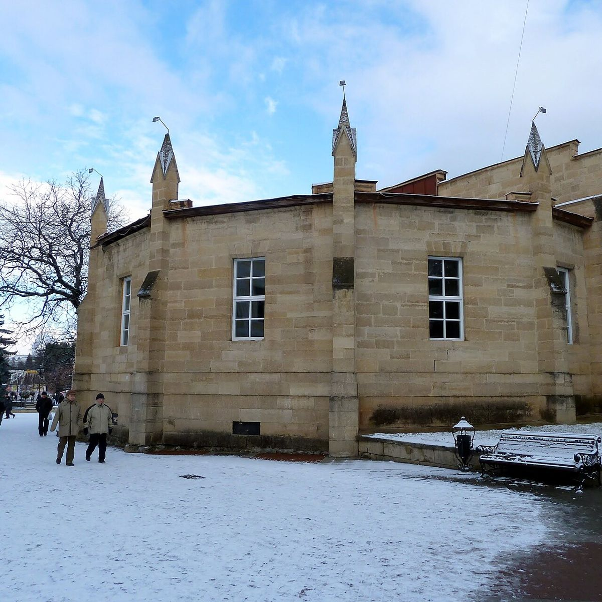
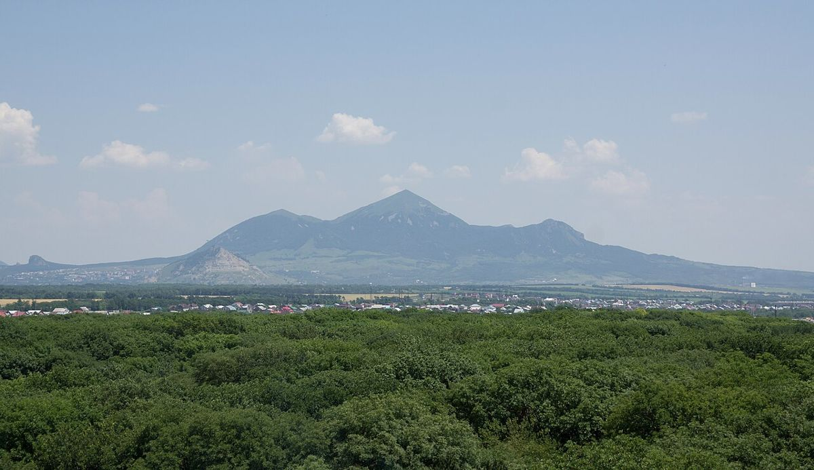

Курорт не по сезону: почему на КМВ стоит ехать в ноябре, феврале или марте
В феврале Кисловодск нередко выглядит странно для тех, кто приехал из города под низким серым небом. Солнце, снег на склонах Малого Седла, люди без шапок на скамейках Курортного парка. А в это время Пятигорск и Минеральные Воды, расположенные ниже, могут стоять в тумане. На Кавказских Минеральных Водах нет единой погоды — и именно поэтому межсезонье здесь недооценено.
Коротко: да, ехать зимой и в межсезонье стоит. Источники, ванны и грязелечебницы работают круглый год, в санаториях меньше людей, а Кисловодск зимой часто солнечный. Главное — выбрать санаторий, где не нужно выходить на мороз после процедур, и взять нескользящую обувь.

Лечение не знает сезона
Минеральная вода выходит из-под земли круглый год с одной и той же температурой и составом. Бюветы, грязелечебницы, ванные отделения работают и в январе, и в ноябре. Нарзанные ванны не становятся слабее от снега за окном, а радоновые процедуры не зависят от длины светового дня.
Зимой в санаториях даже спокойнее: меньше очередей к врачам и на процедуры, проще выбрать удобное время.
Что меняется зимой
Во-первых, климат. Кисловодск, лежащий выше остальных городов, славится солнечными зимними днями, и климатотерапия здесь работает и в холодное время: прогулки на свежем воздухе, солнечные ванны на защищённых от ветра площадках. Ессентуки и Пятигорск зимой чаще пасмурны и сыры. Железноводск в лесу — тихий и заснеженный, но на склонах бывает скользко.
Во-вторых, терренкуры. Основные маршруты в Кисловодске чистят, но крутые участки во время оттепелей и после снегопада могут быть опасны. Обувь с рифлёной подошвой — не рекомендация, а необходимость. Пожилым людям часть маршрутов врачи могут временно заменить на прогулки по ровным аллеям.
В-третьих, сам санаторий. Летом путь от корпуса к ванному отделению — приятная прогулка, зимой — выход из тёплого номера на мороз сразу после горячей процедуры. Это не только неудобно, но и противоречит смыслу многих процедур: после ванны или грязи телу нужен покой. Поэтому зимой особенно важны тёплые переходы между корпусами.

Межсезонье: что выбрать
Ноябрь — тёплый, если повезёт с погодой, и спокойный: летний поток уже схлынул, новогодний ещё не начался.
Январь и февраль — для тех, кто любит снег, горы и солнце. Отсюда можно на день съездить в Домбай, Архыз или к Эльбрусу, но такие поездки лучше планировать вне дней с интенсивными процедурами.
Март и апрель — время, когда в Курортном парке Кисловодска зацветают первые цветы, а на вершинах ещё лежит снег. Погода переменчива, поэтому нужна многослойная одежда.
Межсезонье считается более выгодным по ценам, но конкретные условия зависят от санатория и дат: в праздничные недели спрос растёт.
Что взять с собой
- Обувь с нескользящей подошвой и тёплые носки.
- Шапку и шарф — после процедур выходить на холод с открытой головой нельзя.
- Солнцезащитные очки: зимнее солнце в горах яркое.
Где искать
Перед бронированием на зиму стоит отдельно проверить, как связаны корпуса и далеко ли идти до ванного отделения. Такие детали вместе с отзывами гостей и ценами на 2026–2027 годы удобно смотреть в каталоге здравниц всех четырёх курортов КМВ. Если сомневаетесь, менеджер бесплатно подберёт варианты под ваши даты.
Курорт не по сезону — это тот же курорт, только тише. Иногда именно этого и не хватает.